Pengguna Umum (Publik) — Melihat katalog aset dan memindai QR Code barang/ruangan tanpa login.
User / Pegawai — Mengaktifkan akun, menelusuri aset, mengajukan peminjaman, dan mengembalikan barang.
Verifikator — Melakukan verifikasi tingkat kedua atas peminjaman yang sudah disetujui admin.
Administrator — Mengelola data aset, ruangan, kategori, pengguna, persetujuan peminjaman, dan laporan.
DAFTAR ISI
A. Latar Belakang Sistem SESDIAN
3
B. Alur Akses Utama dan Hak Akses Website
4
C. Panduan Pengguna Umum (Publik, Tanpa Login)
5
C.1 Katalog Publik
5
C.2 Halaman Detail Aset dan Scan QR Code
6
C.3 QR Code Ruangan
6
C.4 Tema Gelap/Terang dan Ukuran Teks
6
D. Panduan User / Pegawai
7
D.1 Aktivasi Akun Pertama Kali (NIP dari Admin)
7
D.2 Login dan Keamanan Sesi
8
D.3 Dashboard Pegawai
9
D.4 Menelusuri Data Aset
9
D.5 Mengajukan Peminjaman
11
D.6 Memantau Status di Daftar Pinjam
12
D.7 Mengembalikan Barang (Sedang Dipinjam)
12
D.8 Notifikasi (Lonceng dan WhatsApp)
13
D.9 Profil: Foto, Identitas, dan Ganti Password
13
E. Panduan Verifikator
14
F. Panduan Administrator
15
F.1 Dashboard Admin
15
F.2 Manajemen Data Aset (Tambah, Edit, Hapus, Gambar)
15
F.3 Import Data Aset dari Excel
17
F.4 QR Code Aset dan Ruangan
17
F.5 Kategori Aset dan Ruangan
17
F.6 Alur Persetujuan Peminjaman dan Pengembalian
18
F.7 Kelola User (Pendaftaran NIP)
19
F.8 Laporan, Ekspor, dan Grafik
20
F.9 Notifikasi WhatsApp
20
G. Pertanyaan Sering Diajukan (FAQ)
21
H. Penutup dan Penyelesaian Masalah
22
A. LATAR BELAKANG SISTEM SESDIAN
SESDIAN (Sistem Digital Inventarisasi Aset Negara) adalah aplikasi berbasis web yang dirancang untuk mempermudah, mentransparansikan, dan mempercepat tata kelola peminjaman serta inventarisasi aset kantor instansi. Setiap aset terpantau dari sisi jumlah stok, lokasi ruangan, kondisi fisik, foto, hingga riwayat peminjamannya.
Sistem ini menggantikan pencatatan manual berbasis kertas dengan alur digital: pegawai mengajukan peminjaman secara online, admin menyetujui, verifikator memeriksa ulang, dan pengembalian barang diverifikasi kembali sehingga stok selalu akurat.
Tujuan Utama Implementasi
Pegawai dapat mengajukan izin pinjam pakai aset secara online tanpa formulir kertas.
Ketersediaan barang tampil apa adanya (real-time) sehingga tidak terjadi bentrok pemakaian.
Persetujuan dua tingkat (admin lalu verifikator) menjaga akuntabilitas setiap transaksi.
Pemberitahuan WhatsApp otomatis/semi-otomatis pada setiap tahapan penting peminjaman.
Laporan peminjaman siap ekspor CSV dan cetak PDF, dilengkapi grafik tren.
Transparansi publik melalui katalog terbuka dan label QR Code pada barang dan ruangan.
Arsitektur Teknologi Sistem
Antarmuka (Frontend): Halaman web statis HTML, CSS, dan JavaScript murni tanpa framework, di-host pada jaringan global Vercel.
Server (Backend): Vercel Serverless Functions (Node.js) yang melayani REST API aplikasi.
Basis Data: Neon Serverless PostgreSQL (cloud).
Notifikasi: Tautan WhatsApp (wa.me) yang siap kirim, atau pengiriman otomatis melalui gateway Fonnte bila token dikonfigurasi.
B. ALUR AKSES UTAMA DAN HAK AKSES WEBSITE
Buka peramban modern (Google Chrome, Mozilla Firefox, Microsoft Edge, atau Safari) pada komputer maupun smartphone, lalu akses tautan resmi:
https://sesdian.vercel.app/
SESDIAN membagi hak akses ke dalam 4 peran:
Kategori Akses
Cara Masuk dan Cakupan Hak
Umum / Publik
Tanpa login. Melihat katalog aset, detail aset, dan inventaris ruangan melalui halaman katalog atau pemindaian QR Code.
User / Pegawai
Login memakai NIP 18 digit dan password. Akun didaftarkan admin (cukup NIP), lalu pegawai mengaktifkannya sendiri saat pertama kali masuk. Dapat menelusuri aset, mengajukan peminjaman, dan mengembalikan barang.
Verifikator
Login sama seperti pegawai. Bertugas melakukan verifikasi tingkat kedua atas peminjaman yang sudah disetujui admin, serta verifikasi pengembalian.
Administrator
Login sama, dengan menu tambahan. Mengelola aset, ruangan, kategori, pengguna, menyetujui/menolak peminjaman, dan menyusun laporan.
Penting: Pendaftaran Akun
Tidak ada pendaftaran mandiri. Seluruh akun didaftarkan oleh administrator cukup dengan NIP 18 digit.
Nama dan password tidak diisi admin, melainkan diatur sendiri oleh pemilik NIP saat pertama kali masuk
(lihat bagian D.1 Aktivasi Akun).
Peta Menu per Peran
Menu
User
Verifikator
Admin
Dashboard
✓
✓
✓
Data Aset
✓ (lihat & pinjam)
✓
✓ (kelola penuh)
Ruangan
✓ (lihat)
✓
✓ (kelola)
Daftar Pinjam
✓ (milik sendiri)
✓ (semua)
✓ (semua + approval)
Sedang Dipinjam
✓
✓
✓
Ajukan Pinjam
✓
✓
✓
Verifikasi
—
✓
✓
Laporan
—
✓
✓
Kelola User
—
—
✓
Detail Profil
✓
✓
✓ (+ pengaturan WhatsApp)
C. PANDUAN PENGGUNA UMUM (PUBLIK, TANPA LOGIN)
Masyarakat umum, tamu, maupun pegawai yang belum memiliki akun dapat melihat transparansi inventaris tanpa login.
C.1 Katalog Publik
Buka https://sesdian.vercel.app/katalog (atau klik "Lihat katalog" pada halaman login). Halaman ini menampilkan:
Kartu statistik: total aset, total stok, stok tersedia, stok dipinjam, dan pengajuan pending.
Kolom pencarian nama, kode, atau merek aset yang menyaring seketika saat diketik.
Chip filter kategori (Elektronik, Furnitur, Kendaraan, dan seterusnya).
Kartu aset per jenis: foto barang, badge BMN/Non-BMN, jumlah unit, nama aset, badge merek berwarna biru, chip kategori dan ruangan.
Tips: Melihat Gambar Ukuran Penuh
Klik langsung pada foto di kartu aset untuk membuka gambar ukuran penuh (lightbox). Tutup dengan mengklik di mana saja atau menekan tombol Esc. Klik bagian kartu lainnya untuk membuka halaman detail.
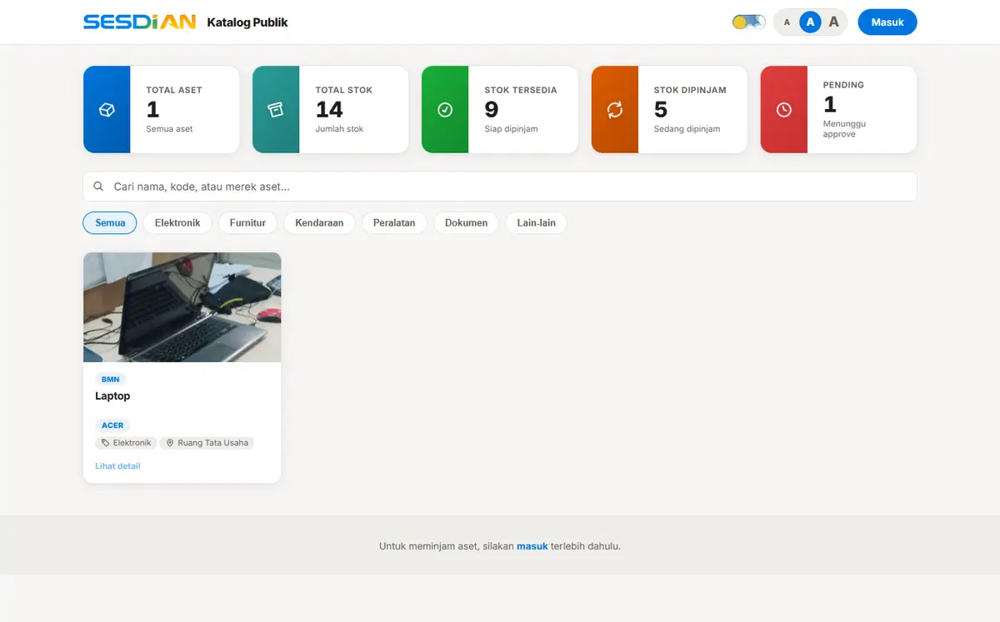
Gambar C.1 — Halaman Katalog Publik
C.2 Halaman Detail Aset dan Scan QR Code
Halaman detail dapat dibuka dengan dua cara:
1
Dari katalogKlik salah satu kartu aset pada halaman katalog publik.
2
Dari stiker QR Code barangBuka kamera smartphone, arahkan ke stiker QR pada bodi barang dari jarak 10–15 cm, lalu ketuk tautan yang muncul. Browser langsung membuka halaman detail aset tersebut.
Halaman detail menampilkan foto (klik untuk ukuran penuh), kode register, nama, merek, kategori, ruangan, tahun, kondisi, jenis BMN/Non-BMN, dan tipe aset. Jumlah stok dan tombol Ajukan Pinjam hanya aktif setelah login; pengunjung publik akan diarahkan ke halaman masuk.
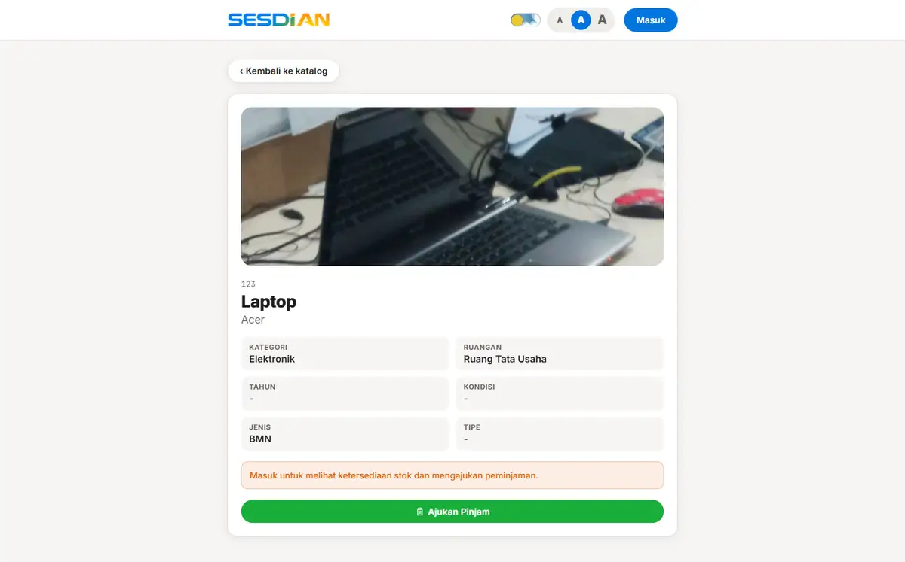
Gambar C.2 — Halaman Detail Aset Publik dengan tombol "Kembali ke katalog"
C.3 QR Code Ruangan
Admin dapat menempel QR Code ruangan di dekat pintu masuk. Memindai QR tersebut membuka katalog yang otomatis tersaring hanya untuk barang-barang di ruangan itu (Daftar Inventaris Ruangan digital), lengkap dengan kondisi dan ketersediaan.
C.4 Tema Gelap/Terang dan Ukuran Teks
Di pojok kanan atas semua halaman terdapat sakelar tema (terang/gelap) dan tombol A A A untuk memilih ukuran teks kecil, normal, atau besar. Pilihan tersimpan di perangkat dan berlaku di seluruh halaman.
D. PANDUAN USER / PEGAWAI
D.1 Aktivasi Akun Pertama Kali (NIP dari Admin)
Akun Anda dibuat oleh admin hanya berupa NIP. Saat pertama kali masuk, Anda diminta mengatur nama dan password sendiri:
1
Buka halaman loginAkses https://sesdian.vercel.app/login lalu masukkan NIP 18 digit Anda dan klik Lanjutkan.
2
Sistem memeriksa NIPBila NIP terdaftar tetapi belum punya password, layar berpindah ke langkah "Aktifkan Akun".
3
Atur identitas AndaIsi Nama Lengkap sesuai identitas, buat password baru minimal 8 karakter, lalu ulangi password yang sama.
4
Simpan dan langsung masukKlik tombol simpan. Akun langsung aktif dan Anda dibawa ke Dashboard tanpa perlu login ulang.
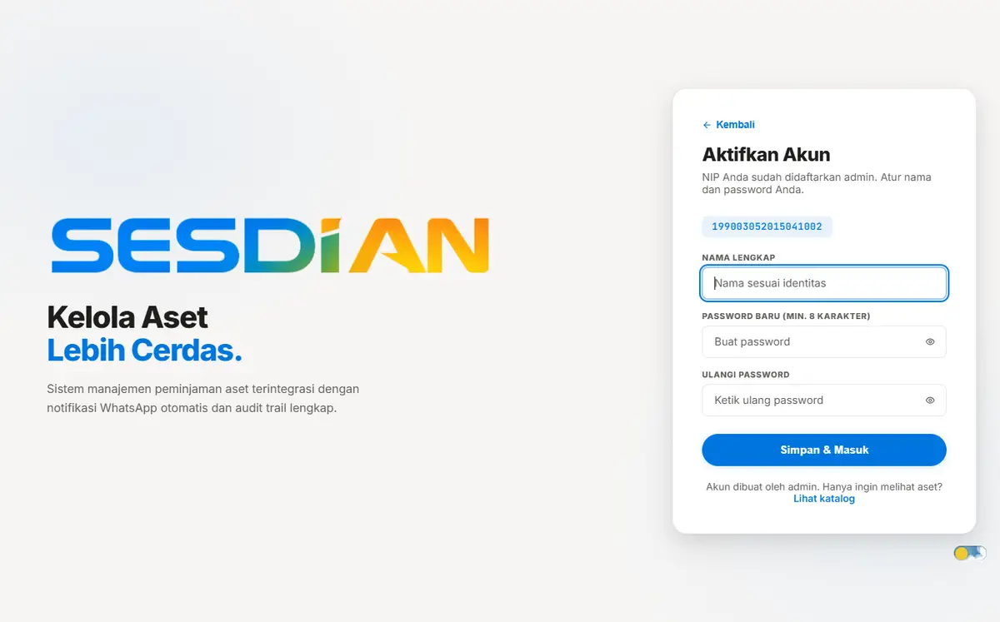
Gambar D.1 — Langkah "Aktifkan Akun" bagi NIP yang belum punya password
NIP Tidak Dikenali?
Bila sistem menyatakan NIP belum terdaftar, hubungi administrator agar NIP Anda didaftarkan terlebih dahulu di menu Kelola User.
Masukkan passwordBila akun sudah aktif, kolom password muncul. Gunakan ikon mata untuk menampilkan ketikan dan menghindari salah ketik.
3
Klik MasukBila kombinasi benar, Anda diarahkan ke Dashboard sesuai peran akun.
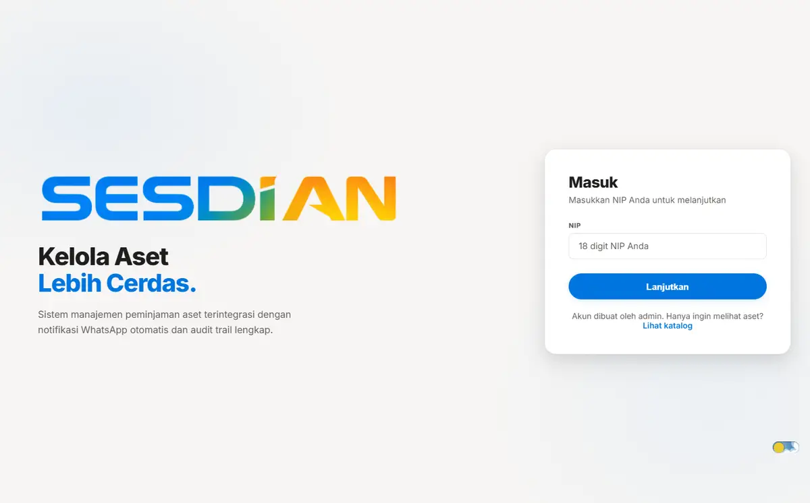
Gambar D.2 — Halaman login: cukup NIP terlebih dahulu
Masa Berlaku Sesi
Sesi login tersimpan aman di perangkat dan berlaku hingga 7 hari. Setelah kedaluwarsa (atau setelah klik "Keluar"), Anda diminta login kembali.
D.3 Dashboard Pegawai
Setelah masuk, Dashboard menampilkan:
Sapaan personal sesuai waktu (pagi/siang/sore/malam) beserta peran akun.
Lima kartu statistik: Total Aset, Total Stok, Stok Tersedia, Stok Dipinjam, dan Pending.
Tabel Peminjaman Terbaru dengan kolom aset, jumlah, peminjam, status, dan tempo, dilengkapi pencarian dan filter status di pojok tabel.
Gambar D.3 — Dashboard pegawai
D.4 Menelusuri Data Aset
Buka menu Data Aset di sidebar kiri. Unit-unit dengan nama dan merek yang sama otomatis dikelompokkan menjadi satu kartu jenis agar daftar tetap ringkas.
Kartu jenis memuat foto, badge BMN/Non-BMN, ketersediaan, kode/jumlah unit, nama aset, badge merek biru (pembeda utama antar jenis bernama sama), chip kategori dan ruangan, kondisi, serta bar stok tersedia/total.
Pencarian nama atau kode, filter BMN/Non-BMN, dan filter status (Semua, Tersedia, Sedang Dipinjam, Maintenance).
Klik foto untuk melihat gambar ukuran penuh; klik kartu untuk membuka detail jenis.
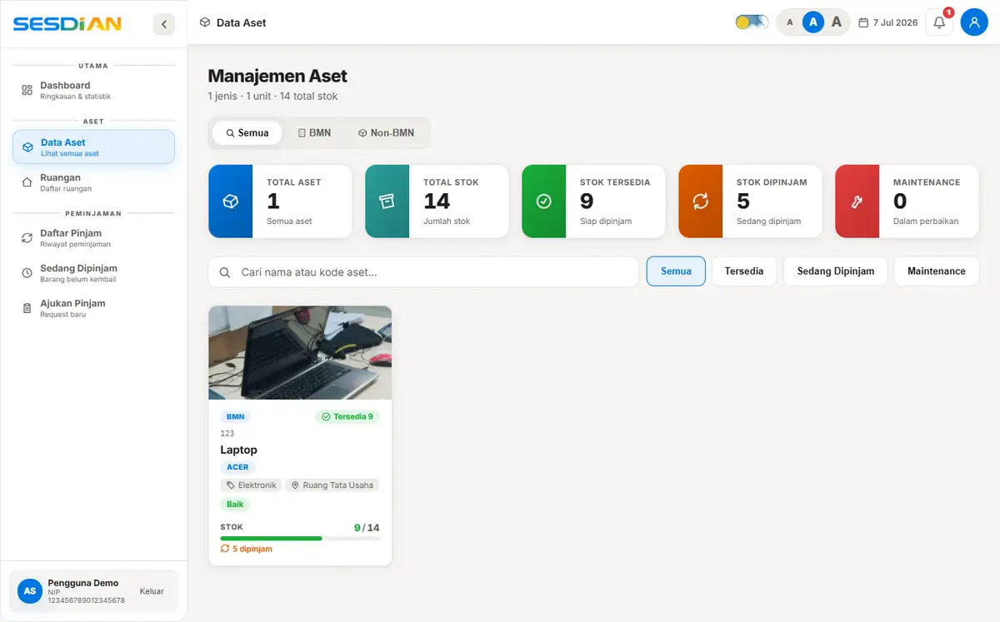
Gambar D.4 — Halaman Data Aset (tampilan pegawai)
Jendela detail jenis menampilkan ringkasan Total/Tersedia/Dipinjam, gambar jenis (klik untuk ukuran penuh), dan daftar seluruh unit fisik beserta kode, kondisi, dan QR-nya. Centang unit yang tersedia, isi tanggal jatuh tempo kembali (wajib), lalu klik Ajukan Pinjam.
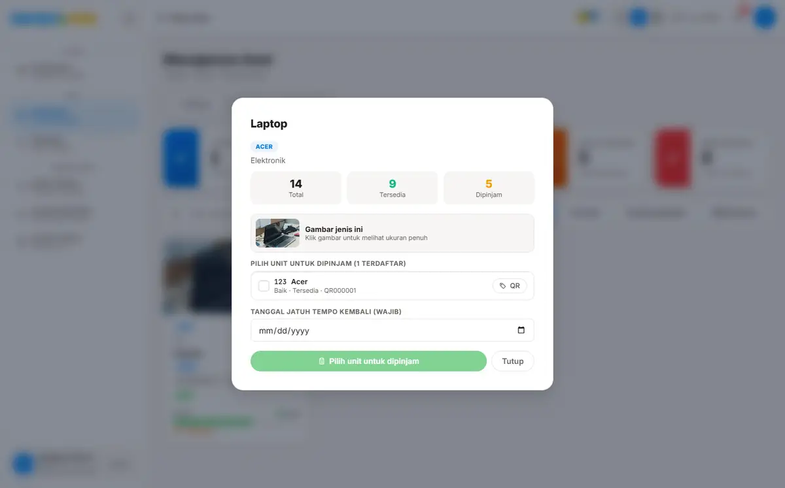
Gambar D.5 — Detail jenis: pilih unit lalu ajukan pinjam
D.5 Mengajukan Peminjaman
Selain lewat detail jenis pada Data Aset, tersedia halaman khusus Ajukan Pinjam di sidebar:
1
Pilih asetKlik kartu aset yang tersedia. Jendela detail terbuka; centang satu atau beberapa unit yang ingin dipinjam.
2
Isi tanggal jatuh tempoTentukan tanggal rencana pengembalian pada kolom tanggal (wajib diisi).
3
Kirim pengajuanKlik Ajukan Pinjam. Status pengajuan menjadi Pending dan menunggu tinjauan admin.
4
Pemberitahuan WhatsAppSistem menyiapkan pesan WhatsApp berisi nota pengajuan kepada admin: terkirim otomatis bila gateway aktif, atau terbuka sebagai draf wa.me yang tinggal Anda kirim.
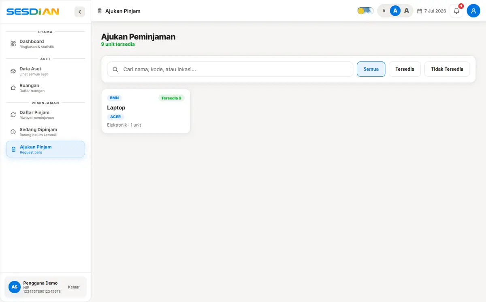
Gambar D.6 — Halaman Ajukan Pinjam
D.6 Memantau Status di Daftar Pinjam
Menu Daftar Pinjam memuat seluruh riwayat pengajuan Anda dengan filter cepat: Semua, Pending, Disetujui, Ditolak, dan Sudah dikembalikan (angka pada tiap tab menunjukkan jumlahnya).
Lolos verifikasi kedua; barang boleh diambil/dipakai.
Dipinjam
Barang sedang berada di tangan peminjam.
Menunggu Verifikasi Kembali
Peminjam sudah mengajukan pengembalian; menunggu konfirmasi petugas.
Kembali
Pengembalian dikonfirmasi; transaksi selesai dan stok pulih.
Ditolak
Pengajuan ditolak admin.
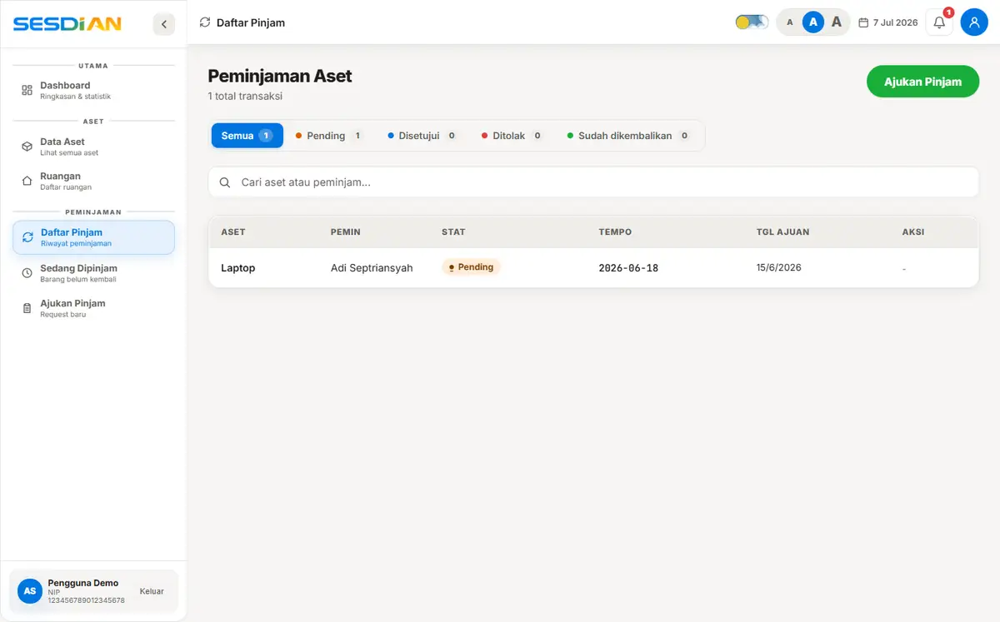
Gambar D.7 — Daftar Pinjam dengan filter status
D.7 Mengembalikan Barang (Sedang Dipinjam)
Menu Sedang Dipinjam berisi barang yang masih di tangan Anda:
1
Klik "Konfirmasi Pengembalian"Pada barang yang akan dikembalikan, klik tombol konfirmasi lalu setujui dialognya. Status berubah menjadi Menunggu Verifikasi Kembali.
2
Serahkan barang fisikBawa barang ke petugas. Admin/verifikator akan menekan Verifikasi Pengembalian; status menjadi Kembali dan stok pulih otomatis.
D.8 Notifikasi (Lonceng dan WhatsApp)
Lonceng di pojok kanan atas: menampilkan kejadian terbaru yang relevan bagi Anda (pengajuan disetujui, ditolak, dikembalikan, dan sebagainya) beserta jumlah yang belum dibaca; diperbarui otomatis secara berkala.
WhatsApp: admin menerima pesan setiap ada pengajuan atau permintaan pengembalian; peminjam menerima kabar keputusan. Terkirim otomatis bila gateway aktif, atau berupa draf wa.me siap kirim.
D.9 Profil: Foto, Identitas, dan Ganti Password
Klik avatar di pojok kanan atas lalu pilih Detail Profil:
Foto profil: klik ikon pensil pada avatar, pilih gambar; foto otomatis dipotong persegi dan tersinkron ke semua perangkat.
Informasi Akun: perbarui identitas akun Anda.
Keamanan: ganti password secara berkala.
Khusus admin, ada kartu Notifikasi WhatsApp (lihat F.9).
Tombol Keluar untuk mengakhiri sesi.
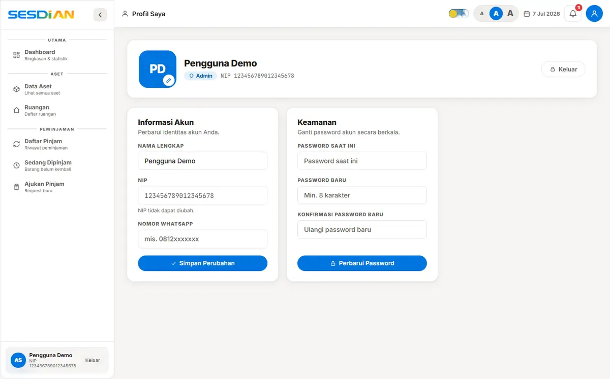
Gambar D.8 — Halaman Detail Profil
E. PANDUAN VERIFIKATOR
Verifikator adalah pemeriksa tingkat kedua. Peminjaman yang sudah disetujui admin belum boleh dipakai sebelum diverifikasi ulang, sehingga setiap transaksi diperiksa dua pasang mata.
E.1 Halaman Verifikasi
Antrian berisi pengajuan berstatus Disetujui Admin (menunggu verifikasi kedua) serta Menunggu Verifikasi Kembali (pengembalian barang).
Tiap baris menampilkan foto profil dan nama peminjam, aset, tanggal, dan status.
Tombol Setujui menandai transaksi Terverifikasi; tombol Tolak mengembalikannya dengan status ditolak. Setiap aksi meminta konfirmasi ulang agar tidak salah klik.
Untuk pengembalian, tombol Verifikasi Dikembalikan menutup transaksi dan memulihkan stok.
Panel donat distribusi status di samping tabel meringkas kondisi seluruh transaksi.
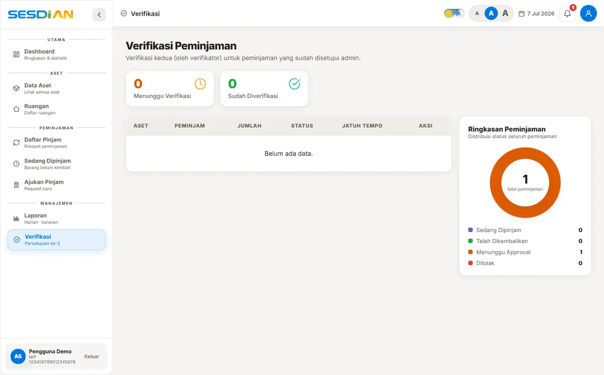
Gambar E.1 — Halaman Verifikasi (antrian verifikator)
Di luar tugas verifikasi, akun verifikator dapat menggunakan seluruh fitur pegawai biasa (menelusuri aset, meminjam, laporan, dan sebagainya).
F. PANDUAN ADMINISTRATOR
F.1 Dashboard Admin
Dashboard admin serupa dengan pegawai namun mencakup data seluruh organisasi: lima kartu statistik agregat dan tabel Peminjaman Terbaru semua pengguna, lengkap dengan pencarian dan filter status.
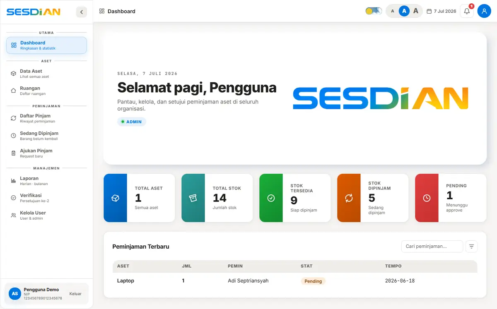
Gambar F.1 — Dashboard administrator
F.2 Manajemen Data Aset
Menu Data Aset bagi admin memiliki tombol Tambah Aset dan Import Excel di kanan atas.
Gambar F.2 — Data Aset dengan aksi admin
Menambah Aset Baru
Kolom
Ketentuan Pengisian
Kode Aset
Kode register unik unit (mis. gabungan Kode Barang + NUP).
Nama Barang
Nama resmi; dilengkapi saran otomatis dari nama yang sudah ada agar penulisan konsisten.
Kategori
Pilih dari dropdown; kategori baru dapat ditambah langsung dari dropdown yang sama.
Ruangan
Pilih lokasi penempatan barang.
Merek
Merek/pabrikan; menjadi badge pembeda dan penentu pengelompokan jenis.
Tahun, Kondisi, Jenis, Tipe
Tahun perolehan; kondisi (Baik/Rusak Ringan/Rusak Berat); jenis BMN/Non-BMN; tipe aset.
Stok
Jumlah stok unit.
Foto
Unggah gambar; tersedia editor potong dengan geser dan perbesar/perkecil (zoom) sebelum disimpan.
Satu Gambar per Jenis
Unit dengan nama dan merek sama memakai satu gambar bersama. Buka detail jenis lalu klik Ganti Gambar: unggah file atau tempel URL, atur potongan pada editor, dan gambar berlaku untuk seluruh unit jenis tersebut. Jenis tanpa foto otomatis memakai ilustrasi bawaan sistem.
Edit dan Hapus Unit
Di dalam detail jenis, setiap unit memiliki tombol ubah (ikon pensil) untuk memperbarui data, tombol hapus (ikon tempat sampah, dengan konfirmasi), serta tombol QR untuk mencetak label.
F.3 Import Data Aset dari Excel
1
Unduh templateKlik Import Excel lalu unduh template resmi agar susunan kolom (Kode Barang, NUP, Nama Barang, Merk, Jenis BMN, dan seterusnya) sudah benar.
2
Isi dataLengkapi baris data pada template. Kode unit dibentuk dari Kode Barang + NUP.
3
Unggah dan validasiPilih file pada jendela import. Sistem memeriksa header dan isi; baris bermasalah dilaporkan sebelum data disimpan.
F.4 QR Code Aset dan Ruangan
QR unit aset: tombol QR pada tiap unit membuka halaman cetak label; gunakan Ctrl + P untuk mencetak stiker, lalu tempel pada bodi barang. Pemindaian mengarah ke halaman detail aset.
QR ruangan: dari kartu ruangan, cetak QR yang mengarah ke katalog publik tersaring per ruangan (Daftar Inventaris Ruangan digital).
F.5 Kategori Aset dan Ruangan
Kategori Aset: menambah kategori baru beserta ikon, dan menghapus kategori yang tidak terpakai (aset lama menjadi tanpa kategori).
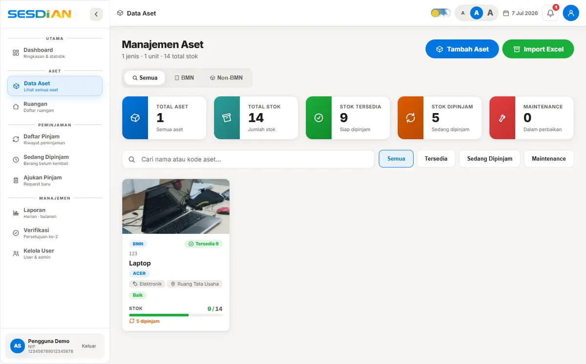
Gambar F.3 — Kelola Kategori Aset
Ruangan: menambah ruangan (nama, kode, penanggung jawab), membuka detail isi ruangan untuk melihat dan memindahkan barang, serta mencetak QR ruangan.
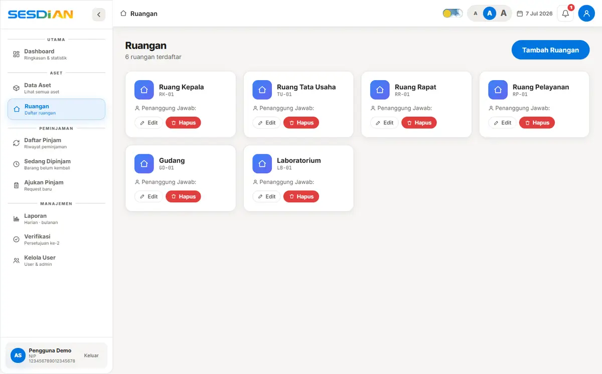
Gambar F.4 — Kelola Ruangan
F.6 Alur Persetujuan Peminjaman dan Pengembalian
1
Pengajuan masukPengajuan baru berstatus Pending tampil di Daftar Pinjam dan halaman Verifikasi admin; lonceng dan WhatsApp memberi tahu admin.
2
Verifikasi pertama (admin)Klik Setujui (Verifikasi 1) atau Tolak. Setiap aksi meminta konfirmasi kedua. Peminjam menerima kabar keputusan.
3
Verifikasi kedua (verifikator)Pengajuan yang disetujui menunggu verifikator menandainya Terverifikasi; setelah itu barang diserahkan dan stok terpotong.
4
PengembalianPeminjam menekan Konfirmasi Pengembalian; petugas menekan Verifikasi Dikembalikan saat barang fisik kembali. Status menjadi Kembali dan stok pulih.
Stok Selalu Konsisten
Sistem menghitung ulang stok dari transaksi aktif (self-healing), sehingga angka tersedia/dipinjam selalu cocok dengan kenyataan meski terjadi perubahan data.
F.7 Kelola User (Pendaftaran NIP)
Menu Kelola User menampilkan seluruh akun beserta peran dan aksinya.
1
Klik "Tambah User"Formulir hanya meminta NIP 18 digit, Role (User/Verifikator/Admin), dan No. HP opsional. Nama dan password sengaja tidak dapat diisi admin.
2
Klik "Daftarkan NIP"Sistem menyimpan akun dan menampilkan dialog instruksi.
3
Beritahu pemilik NIPMinta yang bersangkutan membuka halaman login, memasukkan NIP-nya, lalu mengatur nama dan password sendiri (lihat D.1). Sampai itu dilakukan, akun berbadge BELUM AKTIF.
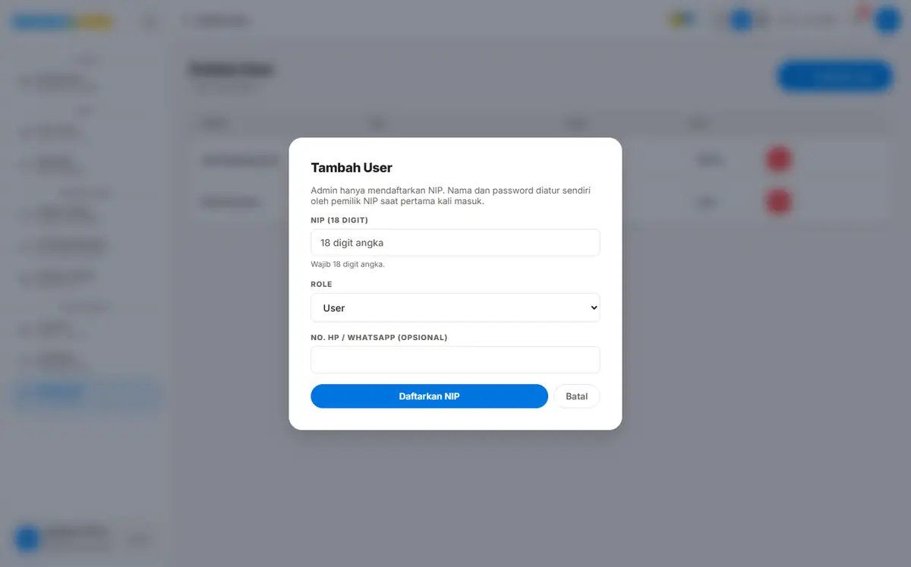
Gambar F.5 — Form Tambah User (cukup NIP)
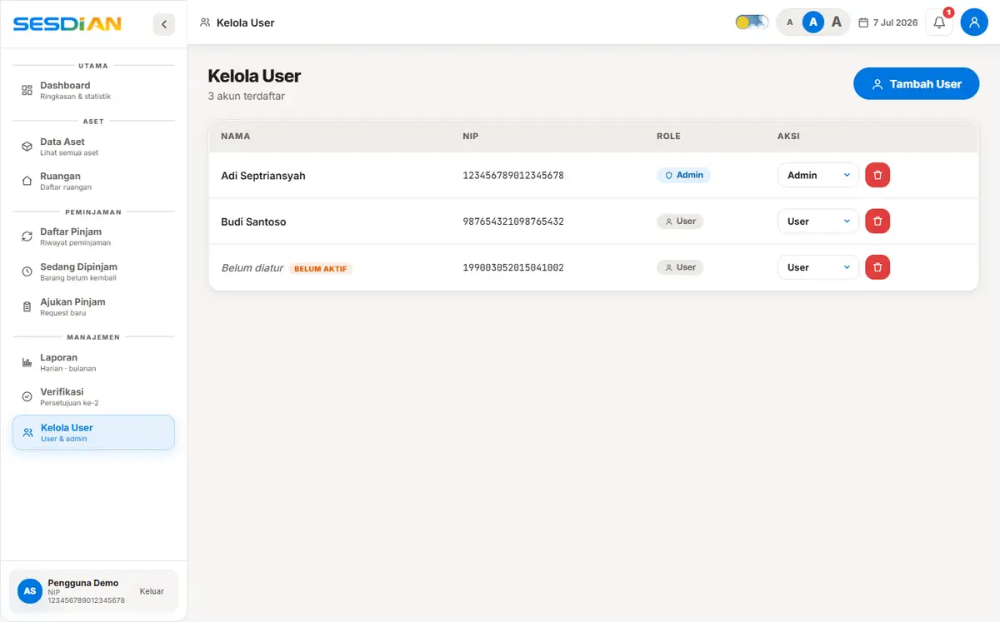
Gambar F.6 — Tabel user dengan badge "Belum aktif"
Ubah peran lewat dropdown pada kolom Aksi (akun sendiri tidak bisa diturunkan).
Hapus akun dengan tombol merah; ditolak bila user masih punya peminjaman aktif.
F.8 Laporan, Ekspor, dan Grafik
Periode: pilih Harian (dengan pemilih tanggal) atau Bulanan (dengan pemilih bulan); ringkasan dan tabel mengikuti periode terpilih.
Ringkasan: total peminjaman pada periode serta rincian per status.
Tabel laporan memuat peminjam, barang, tanggal pinjam/kembali/pengembalian, admin, dan verifikator, dengan filter status di atas tabel.
Export CSV mengunduh rekap tabular; Cetak PDF membuka formulir resmi "DAFTAR PEMINJAMAN BARANG INVENTARIS" siap tanda tangan.
Grafik Peminjaman: kurva garis halus jumlah pengajuan per periode (Harian 14 hari, Bulanan setahun, Tahunan 5 tahun). Arahkan kursor untuk melihat angka tiap titik; klik gambar grafik tidak diperlukan karena nilai maksimum diberi label langsung.
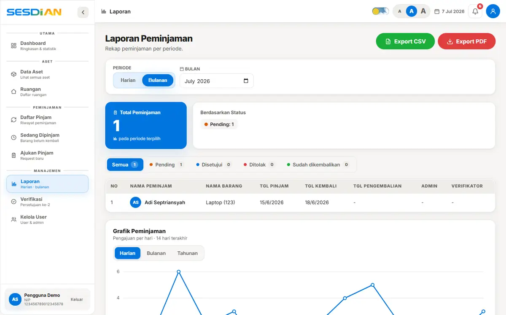
Gambar F.7 — Halaman Laporan Peminjaman
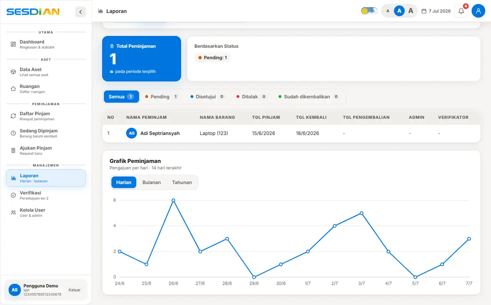
Gambar F.8 — Grafik tren peminjaman (kurva garis)
F.9 Notifikasi WhatsApp
Atur nomor WhatsApp admin pada Detail Profil (kartu Notifikasi WhatsApp). Nomor ini menerima nota setiap pengajuan dan permintaan pengembalian.
Tanpa gateway, sistem membuka tautan wa.me berisi pesan siap kirim (sekali klik kirim).
Bila token Fonnte dikonfigurasi pada server, pesan terkirim otomatis tanpa campur tangan, termasuk pemberitahuan keputusan kepada peminjam.
G. PERTANYAAN SERING DIAJUKAN (FAQ)
1. Apakah masyarakat umum bisa meminjam barang lewat katalog atau scan QR?
Tidak. Publik hanya dapat melihat informasi. Peminjaman memerlukan akun pegawai yang didaftarkan admin.
2. NIP saya tidak dikenali saat login. Bagaimana?
Hubungi administrator agar NIP Anda didaftarkan melalui menu Kelola User. Setelah itu ulangi login dan lakukan aktivasi akun (bagian D.1).
3. Saya lupa password. Bagaimana solusinya?
Hubungi administrator. Admin dapat menghapus akun lama Anda lalu mendaftarkan ulang NIP yang sama, sehingga Anda dapat mengulangi aktivasi dan membuat password baru. Penghapusan hanya bisa dilakukan bila tidak ada peminjaman aktif atas nama Anda.
4. Mengapa beberapa unit barang tampil sebagai satu kartu saja?
Unit dengan nama dan merek sama dikelompokkan menjadi satu jenis agar daftar ringkas. Jumlah unit tertera pada kartu, dan seluruh unit tetap tercatat satu per satu di dalam detail jenis (masing-masing dengan kode dan QR sendiri).
5. Mengapa gambar aset sama untuk semua unit sejenis?
Sistem memakai satu gambar per jenis (nama + merek). Admin dapat menggantinya kapan saja lewat tombol Ganti Gambar pada detail jenis.
6. Pesan WhatsApp tidak terkirim otomatis. Kenapa?
Tanpa token gateway Fonnte, sistem hanya menyiapkan draf wa.me yang harus dikirim manual dengan satu klik. Minta admin mengonfigurasi token Fonnte di server untuk pengiriman otomatis.
7. Nomor WhatsApp saya berubah. Di mana menggantinya?
Buka Detail Profil dan perbarui pada Informasi Akun, atau laporkan ke admin.
8. Berapa lama sesi login bertahan?
Tujuh hari sejak login terakhir. Setelah itu sistem meminta Anda masuk kembali.
9. Data di layar terasa usang atau tidak berubah setelah pembaruan.
Muat ulang halaman (F5). Bila masih sama, lakukan hard refresh (Ctrl + Shift + R) agar berkas terbaru terunduh.
H. PENUTUP DAN PENYELESAIAN MASALAH
Buku petunjuk ini disusun mengikuti alur penggunaan nyata aplikasi SESDIAN, dari akses publik, aktivasi akun pegawai, peminjaman dan pengembalian, verifikasi berlapis, hingga administrasi aset dan pelaporan.
Langkah Penyelesaian Masalah Umum
Gejala
Solusi
Halaman tidak memuat data / berputar terus
Periksa koneksi internet, lalu muat ulang halaman. Coba browser lain bila berlanjut.
Tampilan tidak berubah setelah ada pembaruan sistem
Hard refresh dengan Ctrl + Shift + R untuk mengambil berkas terbaru.
Tidak bisa login padahal password benar
Pastikan NIP tepat 18 digit tanpa spasi. Bila baru didaftarkan, selesaikan aktivasi akun terlebih dahulu.
Tombol admin tidak muncul
Peran akun Anda bukan admin; hubungi administrator untuk penyesuaian peran.
QR Code tidak terbaca
Bersihkan lensa kamera, tambah pencahayaan, dan jaga jarak pindai 10–15 cm.
Dengan digitalisasi tata kelola aset yang terintegrasi ini, diharapkan pemantauan inventaris dinas semakin akuntabel, transparan, dan tertata rapi.
Menyimpan Manual Ini sebagai PDF
Buka berkas ini di browser, tekan Ctrl + P, pilih tujuan Save as PDF, ukuran kertas A4, margin None, dan centang Background graphics, lalu simpan.